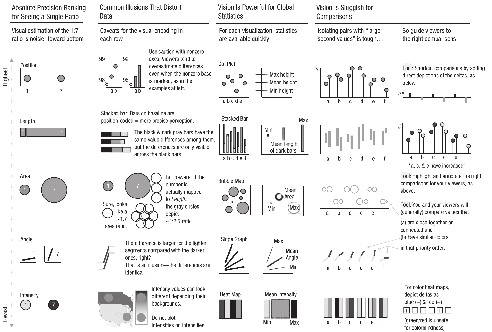
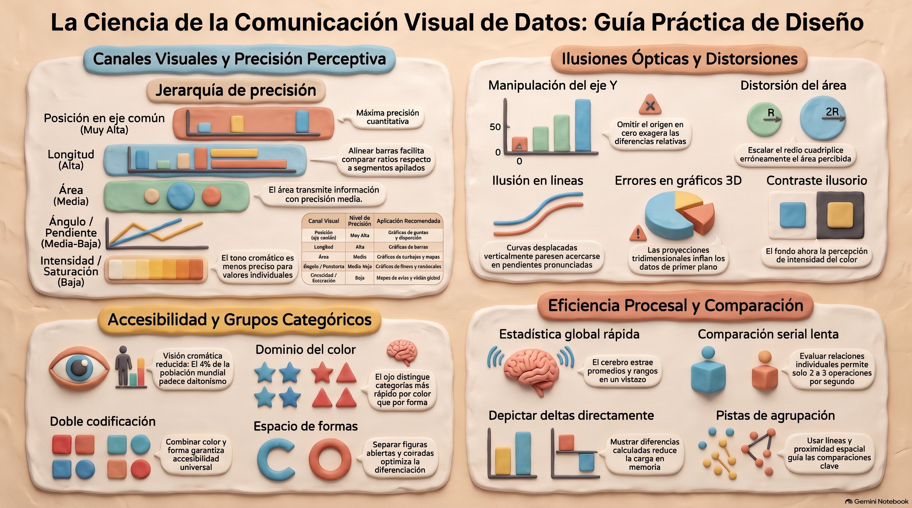
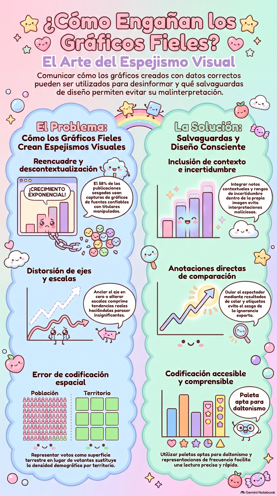

El mensaje en 30 segundos
Cada día vemos gráficos en las noticias, en el trabajo y en la consulta médica, pero muchos se entienden mal. Una revisión de la investigación muestra que captamos de un vistazo la forma general de los datos, aunque comparar valores concretos nos cuesta mucho. Por eso el diseño decide qué entiende el público. Si guiamos la atención y respetamos las convenciones, los gráficos informan en lugar de confundir.
Escucha: «Cómo engañan los gráficos sin mentir»
Una conversación de unos 22 minutos que recorre las ideas principales del artículo.
Podcast generado con NotebookLM a partir del artículo y revisado por el autor de esta web.
Lo que dice el artículo
La revisión reúne décadas de investigación sobre cómo leemos los gráficos. Su figura 2 lo resume en una sola tabla: qué canales visuales leemos con precisión, qué ilusiones los distorsionan, en qué es buena la vista y en qué es lenta.

1. No todos los canales son iguales
Leemos con más precisión la posición y la longitud que el área, el ángulo o la intensidad del color.
2. Cada canal tiene sus ilusiones
Ejes que no empiezan en cero, áreas que engañan o colores que cambian según el fondo.
3. La vista es rápida para lo global
Medias, máximos, tendencias y agrupaciones se perciben de un vistazo.
4. Y lenta para comparar
Comparar valores concretos exige atención, así que hay que guiar al público hacia la comparación que importa.
Mismas estadísticas, distintos gráficos
Antes de resumir los datos, hay que mirarlos. Prueba a cambiar de conjunto de datos: las medias, las desviaciones y la correlación son prácticamente las mismas.
El eje cambia la historia
Un eje recortado puede convertir una diferencia pequeña en un salto enorme. Pero empezar siempre en cero tampoco es la solución: depende de qué diferencia es relevante.
El color también exagera
Lo mismo ocurre con el color: la escala decide si un cambio de un grado parece una emergencia o pasa desapercibido.
Dos infografías para llevar


¿Y ahora qué? Cinco comprobaciones antes de publicar un gráfico
- Mira los datos antes de resumirlos: un diagrama de dispersión revela lo que la media esconde.
- Usa posición y longitud para los valores que hay que comparar con precisión.
- Decide dónde empieza el eje pensando en qué diferencia importa, y dilo.
- Guía la comparación: resalta, anota y pon cerca lo que hay que comparar.
- Piensa en todo el público: paletas aptas para daltonismo y texto que acompañe al color.